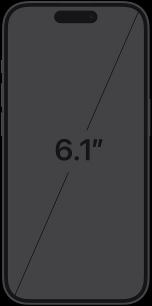

| Specifications | Iphone 15 Pro | Iphone 15 Pro Max |
|---|---|---|
| Finish |

Black Titanium, White Titanium, Blue Titanium, Natural Titanium Titanium design Ceramic Shield front Textured matte glass back |

Black Titanium, White Titanium, Blue Titanium, Natural Titanium Titanium design Ceramic Shield front Textured matte glass back |
| Capacity1 | 128GB 256GB 512GB 1TB |
256GB 512GB 1TB |
| Size and Weight2 | Height: 5.77 inches (146.6 mm) Width: 2.78 inches (70.6 mm) Depth: 0.32 inch (8.25 mm) Weight: 6.60 ounces (187 grams) |
Height: 6.29 inches (159.9 mm) Width: 3.02 inches (76.7 mm) Depth: 0.32 inch (8.25 mm) Weight: 7.81 ounces (221 grams) |
| Display |  Super Retina XDR display 6.1‑inch (diagonal) all‑screen OLED display 2556‑by‑1179-pixel resolution at 460 ppi The iPhone 15 Pro display has rounded corners that follow a beautiful curved design, and these corners are within a standard rectangle. When measured as a standard rectangular shape, the screen is 6.12 inches diagonally (actual viewable area is less). |
Super Retina XDR display 6.7‑inch (diagonal) all‑screen OLED display 2796‑by‑1290-pixel resolution at 460 ppi The iPhone 15 Pro Max display has rounded corners that follow a beautiful curved design, and these corners are within a standard rectangle. When measured as a standard rectangular shape, the screen is 6.69 inches diagonally (actual viewable area is less). |
| Camera |
Pro camera system 48MP Main: 24 mm, ƒ/1.78 aperture, second‑generation sensor‑shift optical image stabilization, 100% Focus Pixels, support for super‑high‑resolution photos (24MP and 48MP) 12MP Ultra Wide: 13 mm, ƒ/2.2 aperture and 120° field of view, 100% Focus Pixels 12MP 2x Telephoto (enabled by quad‑pixel sensor): 48 mm, ƒ/1.78 aperture, second‑generation sensor‑shift optical image stabilization, 100% Focus Pixels 12MP 3x Telephoto: 77 mm, ƒ/2.8 aperture, optical image stabilization 3x optical zoom in, 2x optical zoom out; 6x optical zoom range Digital zoom up to 15x | Pro camera system 48MP Main: 24 mm, ƒ/1.78 aperture, second‑generation sensor‑shift optical image stabilization, 100% Focus Pixels, support for super‑high‑resolution photos (24MP and 48MP) 12MP Ultra Wide: 13 mm, ƒ/2.2 aperture and 120° field of view, 100% Focus Pixels 12MP 2x Telephoto (enabled by quad‑pixel sensor): 48 mm, ƒ/1.78 aperture, second‑generation sensor‑shift optical image stabilization, 100% Focus Pixels 12MP 5x Telephoto: 120 mm, ƒ/2.8 aperture, 3D sensor‑shift optical image stabilization and autofocus, tetraprism design 5x optical zoom in, 2x optical zoom out; 10x optical zoom range Digital zoom up to 25x |
| Both models | Customizable default lens (Main) Sapphire crystal lens cover Adaptive True Tone flash Photonic Engine Deep Fusion Smart HDR 5 Next-generation portraits with Focus and Depth Control Portrait Lighting with six effects Night mode Night mode portraits enabled by LiDAR Scanner Panorama (up to 63MP) Photographic Styles Macro photography Apple ProRAW Wide color capture for photos and Live Photos Lens correction (Ultra Wide) Advanced red-eye correction Auto image stabilization Burst mode Photo geotagging Image formats captured: HEIF, JPEG, and DNG | Customizable default lens (Main) Sapphire crystal lens cover Adaptive True Tone flash Photonic Engine Deep Fusion Smart HDR 5 Next-generation portraits with Focus and Depth Control Portrait Lighting with six effects Night mode Night mode portraits enabled by LiDAR Scanner Panorama (up to 63MP) Photographic Styles Macro photography Apple ProRAW Wide color capture for photos and Live Photos Lens correction (Ultra Wide) Advanced red-eye correction Auto image stabilization Burst mode Photo geotagging Image formats captured: HEIF, JPEG, and DNG |
| TrueDepth Camera |
12MP camera ƒ/1.9 aperture Autofocus with Focus Pixels Retina Flash Photonic Engine Deep Fusion Smart HDR 5 Next-generation portraits with Focus and Depth Control Portrait Lighting with six effects Animoji and Memoji Night mode Photographic Styles Apple ProRAW Wide color capture for photos and Live Photos Lens correction Auto image stabilization Burst mode 4K video recording at 24 fps, 25 fps, 30 fps, or 60 fps 1080p HD video recording at 25 fps, 30 fps, or 60 fps Cinematic mode up to 4K HDR at 30 fps HDR video recording with Dolby Vision up to 4K at 60 fps ProRes video recording up to 4K at 60 fps with external recording Log video recording Academy Color Encoding System Slo-mo video support for 1080p at 120 fps Time‑lapse video with stabilization Night mode Time-lapse QuickTake video Cinematic video stabilization (4K, 1080p, and 720p) | 12MP camera ƒ/1.9 aperture Autofocus with Focus Pixels Retina Flash Photonic Engine Deep Fusion Smart HDR 5 Next-generation portraits with Focus and Depth Control Portrait Lighting with six effects Animoji and Memoji Night mode Photographic Styles Apple ProRAW Wide color capture for photos and Live Photos Lens correction Auto image stabilization Burst mode 4K video recording at 24 fps, 25 fps, 30 fps, or 60 fps 1080p HD video recording at 25 fps, 30 fps, or 60 fps Cinematic mode up to 4K HDR at 30 fps HDR video recording with Dolby Vision up to 4K at 60 fps ProRes video recording up to 4K at 60 fps with external recording Log video recording Academy Color Encoding System Slo-mo video support for 1080p at 120 fps Time‑lapse video with stabilization Night mode Time-lapse QuickTake video Cinematic video stabilization (4K, 1080p, and 720p) |
| Face ID |
Enabled by TrueDepth camera for facial recognition | Enabled by TrueDepth camera for facial recognition |
Apple Pay |
Pay with your iPhone using Face ID in stores, within apps, and on the web Send and receive money in Messages with Apple Cash4 Complete purchases made with Apple Pay on your Mac Pay for your ride using Express Transit5 | Pay with your iPhone using Face ID in stores, within apps, and on the web Send and receive money in Messages with Apple Cash4 Complete purchases made with Apple Pay on your Mac Pay for your ride using Express Transit5 |
Apple Card |
Credit card created by Apple, designed for iPhone Get unlimited 3% Daily Cash at Apple and select merchants,6 2% with Apple Pay, and 1% everywhere else Use the Wallet app to apply for, manage, and use Apple Card Titanium, laser‑etched physical credit card for use where Apple Pay is not accepted yet Share with up to five people, 13 years or older, in your Family Sharing7 group to track expenses and manage spending | Credit card created by Apple, designed for iPhone Get unlimited 3% Daily Cash at Apple and select merchants,6 2% with Apple Pay, and 1% everywhere else Use the Wallet app to apply for, manage, and use Apple Card Titanium, laser‑etched physical credit card for use where Apple Pay is not accepted yet Share with up to five people, 13 years or older, in your Family Sharing7 group to track expenses and manage spending |
Safety |
Emergency SOS via satellite8 Crash Detection9 Roadside Assistance via satellite8 | Emergency SOS via satellite8 Crash Detection9 Roadside Assistance via satellite8 |
Location  |
Precision dual-frequency GPS (GPS, GLONASS, Galileo, QZSS, BeiDou, and NavIC) Digital compass Wi-Fi Cellular iBeacon microlocation | Precision dual-frequency GPS (GPS, GLONASS, Galileo, QZSS, BeiDou, and NavIC) Digital compass Wi-Fi Cellular iBeacon microlocation |
| Video Calling13 |
FaceTime video calling over cellular or Wi‑Fi FaceTime HD (1080p) video calling over 5G or Wi‑Fi Share experiences like movies, TV, music, and other apps in a FaceTime call with SharePlay Screen sharing Portrait mode in FaceTime video Spatial Audio Voice Isolation and Wide Spectrum microphone modes Optical zoom with rear‑facing camera | FaceTime video calling over cellular or Wi‑Fi FaceTime HD (1080p) video calling over 5G or Wi‑Fi Share experiences like movies, TV, music, and other apps in a FaceTime call with SharePlay Screen sharing Portrait mode in FaceTime video Spatial Audio Voice Isolation and Wide Spectrum microphone modes Optical zoom with rear‑facing camera |
Audio Calling13 |
FaceTime audio Voice over LTE (VoLTE)10 Wi‑Fi calling10 Share experiences like movies, TV, music, and other apps in a FaceTime call with SharePlay Screen sharing Spatial Audio Voice Isolation and Wide Spectrum microphone modes | FaceTime audio Voice over LTE (VoLTE)10 Wi‑Fi calling10 Share experiences like movies, TV, music, and other apps in a FaceTime call with SharePlay Screen sharing Spatial Audio Voice Isolation and Wide Spectrum microphone modes |
| Audio Playback |
Supported formats include AAC, MP3, Apple Lossless, FLAC, Dolby Digital, Dolby Digital Plus, and Dolby Atmos Spatial Audio playback User‑configurable maximum volume limit | Supported formats include AAC, MP3, Apple Lossless, FLAC, Dolby Digital, Dolby Digital Plus, and Dolby Atmos Spatial Audio playback User‑configurable maximum volume limit |
| Video Playback |
Supported formats include HEVC, H.264, AV1, and ProRes HDR with Dolby Vision, HDR10, and HLG Up to 4K HDR AirPlay for mirroring, photos, and video out to Apple TV (2nd generation or later) or AirPlay‑enabled smart TV Video mirroring and video out support: Up to 4K HDR through native DisplayPort output over USB-C or USB-C Digital AV Adapter (model A2119; adapter sold separately)14 | Supported formats include HEVC, H.264, AV1, and ProRes HDR with Dolby Vision, HDR10, and HLG Up to 4K HDR AirPlay for mirroring, photos, and video out to Apple TV (2nd generation or later) or AirPlay‑enabled smart TV Video mirroring and video out support: Up to 4K HDR through native DisplayPort output over USB-C or USB-C Digital AV Adapter (model A2119; adapter sold separately)14 |
| Power and Battery18 |
Video playback Up to 23 hours Video playback (streamed) Up to 20 hours Audio playback Up to 75 hours Built‑in rechargeable lithium‑ion battery MagSafe wireless charging up to 15W19 Qi wireless charging up to 7.5W19 Fast-charge capable: Up to 50% charge in around 30 minutes20 with 20W adapter or higher (available separately) | Video playback Up to 29 hours Video playback (streamed) Up to 25 hours Audio playback Up to 95 hours Built‑in rechargeable lithium‑ion battery MagSafe wireless charging up to 15W19 Qi wireless charging up to 7.5W19 Fast-charge capable: Up to 50% charge in around 30 minutes20 with 20W adapter or higher (available separately) |
| Environmental Requirements | Operating ambient temperature: 32° to 95° F (0° to 35° C) Nonoperating temperature: −4° to 113° F (−20° to 45° C) Relative humidity: 5% to 95% noncondensing Operating altitude: tested up to 10,000 feet (3000 m) | Operating ambient temperature: 32° to 95° F (0° to 35° C) Nonoperating temperature: −4° to 113° F (−20° to 45° C) Relative humidity: 5% to 95% noncondensing Operating altitude: tested up to 10,000 feet (3000 m) |